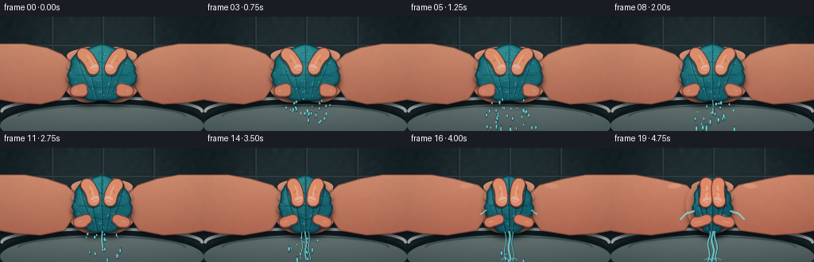
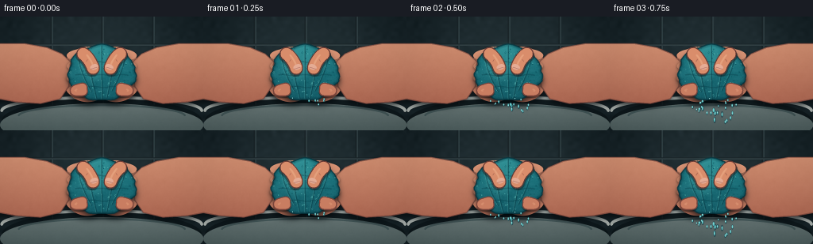
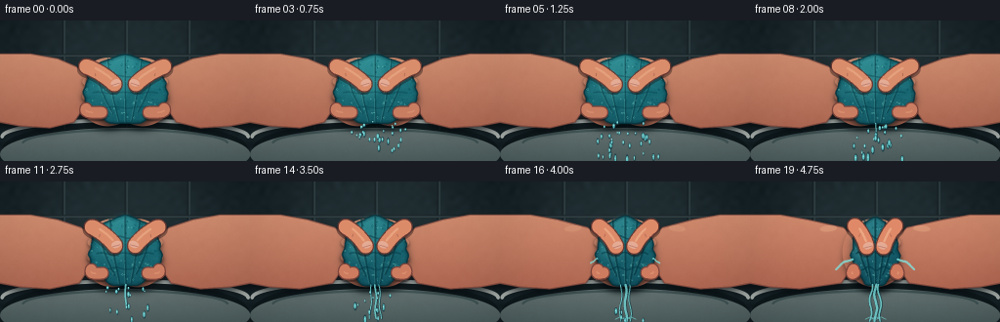
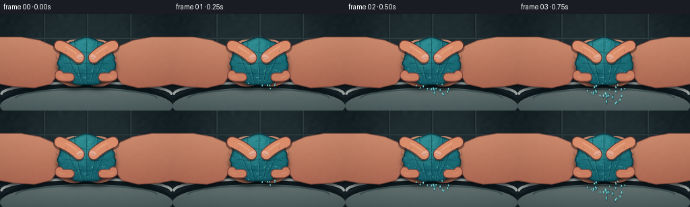

CODING AGENTS AS PIXEL WORLD MODELS
traex/GPT-5.6-Sol · phygen_015
点击播放 · 原生 RGB 像素
逐轮保存的候选
回放视频、检查图与代码变化。
每份候选均可单独播放。实际图片检查记录在下方工具轨迹中。
候选 01播放与检查图
点击播放 · 原生 RGB 像素


展开代码变化
--- 上一保存版本 +++ 本次保存版本 @@ -0,0 +1,358 @@ +from pathlib import Path +import math +import cv2 +import numpy as np +import artifact_io + +# Deterministic procedural close-up of two hands wringing a soaked cloth. +W, H, N, FPS = 256, 144, 20, 4.0 +S = 3 +w, h = W*S, H*S +rng = np.random.default_rng(15015) + +# Stable photographic grain / cloth fibers. +grain = rng.normal(0, 1, (h, w)).astype(np.float32) +grain = cv2.GaussianBlur(grain, (0, 0), 0.45*S) +coarse = cv2.resize(rng.normal(0, 1, (30, 50)).astype(np.float32), (w, h), interpolation=cv2.INTER_CUBIC) + +# Ballistic droplets: increasingly frequent late in the squeeze. +drops = [] +for i in range(105): + u = rng.random() + start = 0.12 + 4.42 * (1.0 - (1.0-u)**0.42) # many events late + side = rng.choice([-1, 0, 0, 0, 1]) + xoff = rng.normal(side*17, 10 if side == 0 else 5) + yoff = rng.uniform(-3, 5) + vx = rng.normal(side*4.0, 3.0) + vy = rng.uniform(17, 42) + radius = rng.uniform(0.55, 1.45) + drops.append((start, xoff, yoff, vx, vy, radius)) + + +def sc_pts(points): + return np.round(np.asarray(points, np.float32)*S).astype(np.int32) + + +def poly_mask(points): + m = np.zeros((h, w), np.uint8) + cv2.fillPoly(m, [sc_pts(points)], 255, lineType=cv2.LINE_AA) + return m + + +def ellipse_mask(cx, cy, rx, ry, angle=0): + m = np.zeros((h, w), np.uint8) + cv2.ellipse(m, (round(cx*S), round(cy*S)), (max(1,round(rx*S)), max(1,round(ry*S))), angle, 0, 360, 255, -1, cv2.LINE_AA) + return m + + +def blend(im, mask, color, opacity=1.0): + a = (mask.astype(np.float32)/255.0*opacity)[...,None] + c = np.asarray(color, np.float32) + im[:] = im*(1-a) + c*a + + +def blend_gradient(im, mask, top, bottom, noise_amp=0.0, opacity=1.0): + yy = np.linspace(0, 1, h, dtype=np.float32)[:,None,None] + col = np.asarray(top,np.float32)[None,None,:]*(1-yy) + np.asarray(bottom,np.float32)[None,None,:]*yy + col = np.broadcast_to(col, (h,w,3)).copy() + if noise_amp: + col += (grain*noise_amp + coarse*noise_amp*.24)[...,None] + a = (mask.astype(np.float32)/255.0*opacity)[...,None] + im[:] = im*(1-a) + col*a + + +def soft_shadow(im, mask, dx, dy, sigma, color=(5,12,17), opacity=.55): + shifted = np.zeros_like(mask) + M = np.float32([[1,0,dx*S],[0,1,dy*S]]) + shifted = cv2.warpAffine(mask, M, (w,h), flags=cv2.INTER_LINEAR, borderValue=0) + shifted = cv2.GaussianBlur(shifted, (0,0), sigma*S) + blend(im, shifted, color, opacity) + + +def line(im, points, color, width=1, alpha=1.0, closed=False): + layer = im.copy() + cv2.polylines(layer, [sc_pts(points)], closed, color, max(1,round(width*S)), cv2.LINE_AA) + if alpha == 1: + im[:] = layer + else: + im[:] = im*(1-alpha)+layer*alpha + + +def draw_background(frame_idx): + # Cool slate bathroom tiles and a white porcelain basin establish a wet setting. + Y, X = np.mgrid[0:h,0:w].astype(np.float32) + rad = np.sqrt(((X-w*.50)/(w*.72))**2 + ((Y-h*.43)/(h*.95))**2) + base = np.zeros((h,w,3), np.float32) + base[...,0] = 29 - 12*rad + coarse*1.3 + base[...,1] = 43 - 15*rad + coarse*1.4 + base[...,2] = 48 - 16*rad + coarse*1.6 + # Soft tiles. + for xline in [64, 128, 192]: + xx = round(xline*S) + cv2.line(base, (xx,0),(xx,round(111*S)), (19,29,33), 1*S, cv2.LINE_AA) + cv2.line(base, (xx+2*S,0),(xx+2*S,round(111*S)), (44,59,63), 1*S, cv2.LINE_AA) + cv2.line(base, (0,35*S),(w,35*S), (20,30,34), S, cv2.LINE_AA) + cv2.line(base, (0,36*S),(w,36*S), (45,59,63), S, cv2.LINE_AA) + cv2.line(base, (0,74*S),(w,74*S), (20,30,34), S, cv2.LINE_AA) + # Defocused reflection on tile. + glow = ellipse_mask(128, 46, 91, 58) + glow = cv2.GaussianBlur(glow,(0,0),22*S) + blend(base, glow, (66,80,82), .16) + # Sink behind the action. + sink_shadow = ellipse_mask(128, 132, 126, 29) + blend(base, sink_shadow, (9,18,21), .65) + basin = ellipse_mask(128, 137, 128, 27) + blend_gradient(base, basin, (174,183,179), (75,91,91), 1.2) + rim = np.zeros((h,w),np.uint8) + cv2.ellipse(rim,(128*S,119*S),(126*S,17*S),0,180,360,255,3*S,cv2.LINE_AA) + blend(base,rim,(218,223,216),.73) + inner = np.zeros((h,w),np.uint8) + cv2.ellipse(inner,(128*S,126*S),(105*S,14*S),0,185,355,255,2*S,cv2.LINE_AA) + blend(base,inner,(40,61,64),.55) + # Slight stable camera grain. + base += grain[...,None]*0.8 + return np.clip(base,0,255) + + +def blob_points(cx, cy, rx, ry, p, frame_idx): + pts=[] + for k in range(160): + a=2*math.pi*k/160 + # Fixed, cloth-like scalloped silhouette; slight high-pressure tremor. + r=1 + .030*math.sin(5*a+0.7)+.022*math.sin(11*a-1.2)+.012*math.sin(23*a) + trem = (0.35*math.sin(frame_idx*2.7+a*3) if p>.72 else 0) + x=cx + rx*math.cos(a)*r + trem + y=cy + ry*math.sin(a)*(1+.035*math.sin(7*a)) + # Finger-pressure dimples in the side walls. + for yy in [52,68,84,98]: + g=math.exp(-((y-yy)/5.2)**2) + if math.cos(a)<-.25: x += 2.0*p*g + if math.cos(a)>.25: x -= 2.0*p*g + pts.append((x,y)) + return pts + + +def hand_base(im, side, edge, p): + # side -1: left, +1: right. Palms and fingers behind the towel. + if side < 0: + palm_pts=[(-8,34),(31,34),(59,39),(edge-8,47),(edge+3,57),(edge+1,88),(edge-10,104),(51,110),(20,108),(-8,103)] + else: + palm_pts=[(264,34),(225,34),(197,39),(edge+8,47),(edge-3,57),(edge-1,88),(edge+10,104),(205,110),(236,108),(264,103)] + pm=poly_mask(palm_pts) + # Rounded palm mass. + palm_cx = edge-25*side + em=ellipse_mask(palm_cx,73,33,35,-side*8) + pm=np.maximum(pm,em) + soft_shadow(im,pm,side*2,4,3.5,(5,10,13),.70) + # Warm skin gradient, increasingly flushed under force. + flush=10*p + blend_gradient(im,pm,(220+flush*.4,157-flush*.2,124-flush*.15),(154+flush*.5,84,67),2.2) + # Fingers hugging the rear side, each with its own rounded lobe. + ys=[48,62,78,94] + for j,yy in enumerate(ys): + length=34-j*1.6 + cx=edge-side*(length*.47+2) + fm=ellipse_mask(cx,yy,length*.58,7.2,side*(4-j*2)) + soft_shadow(im,fm,side*.6,1.2,1.4,(28,13,12),.35) + top=(231+flush*.25,166-flush*.15,132-flush*.1) + bot=(173+flush*.5,99,77) + blend_gradient(im,fm,top,bot,1.5) + # side contour and joint crease + x1=edge-side*(length*.72) + x2=edge-side*(length*.40) + ycrease=yy+2.1 + line(im,[(x1,ycrease),(x2,ycrease+side*.2)],(118,65,57),.65,.42) + # Hand silhouette outline. + contour=(91,51,47) + line(im,palm_pts,contour,1.1,.48,True) + + +def front_thumb(im, side, edge, p, cx=128): + # Thick diagonal thumb crossing the front of the wet cloth. + start=(edge-side*(19-2*p), 47-1.5*p) + end=(cx+side*(11-2.5*p), 65+2.0*p) + # Curved centerline. + mid=((start[0]+end[0])/2-side*2, (start[1]+end[1])/2-3) + pts=[] + for q in np.linspace(0,1,22): + x=(1-q)**2*start[0]+2*(1-q)*q*mid[0]+q*q*end[0] + y=(1-q)**2*start[1]+2*(1-q)*q*mid[1]+q*q*end[1] + pts.append((x,y)) + # Shadow, outline and flesh stroke. + line(im,[(x+side*1.0,y+2.3) for x,y in pts],(25,18,18),17.2,.40) + line(im,pts,(105,57,51),17.0,.92) + line(im,pts,(217+6*p,142-5*p,108-4*p),14.4,1.0) + # Lit ridge / pressure blanching near the tip. + ridge=[(x-side*.3,y-2.2) for x,y in pts[6:19]] + line(im,ridge,(245,190,151),2.0,.38+.20*p) + # Thumbnail on the visible tip, pointed toward center. + tx,ty=end + nm=ellipse_mask(tx-side*1.2,ty-1.4,5.0,3.3,side*19) + blend_gradient(im,nm,(246,202,177),(210,143,126),.4,.88) + line(im,[(tx-side*5.0,ty-1),(tx+side*2.7,ty+1.1)],(163,99,89),.55,.55) + # Flexion creases. + q1=pts[5]; q2=pts[7] + line(im,[(q1[0]-side*1.7,q1[1]+4),(q2[0]+side*1.1,q2[1]+5)],(124,68,59),.7,.42) + + +def front_lower_finger(im, side, edge, p): + # One hooked lower finger makes the grip read as a fist rather than flat palms. + start=(edge-side*18,90) + mid=(edge+side*1,95+1.5*p) + end=(128+side*(24-3*p),94-1*p) + pts=[] + for q in np.linspace(0,1,18): + x=(1-q)**2*start[0]+2*(1-q)*q*mid[0]+q*q*end[0] + y=(1-q)**2*start[1]+2*(1-q)*q*mid[1]+q*q*end[1] + pts.append((x,y)) + line(im,[(x,y+2.2) for x,y in pts],(34,20,19),13,.38) + line(im,pts,(125,69,60),13,.94) + line(im,pts,(201+8*p,126-3*p,98-3*p),10.8,1) + line(im,pts[4:13],(237,169,131),1.2,.33+.15*p) + + +def draw_towel(im, p, frame_idx): + cx=128 + rx=43-18.0*p + # Brief bulge before the final hard compression. + ry=35+3.8*p-4.0*p*p + cy=71+1.5*p + pts=blob_points(cx,cy,rx,ry,p,frame_idx) + tm=poly_mask(pts) + soft_shadow(im,tm,0,5,4,(1,10,13),.72) + # Saturated teal microfiber: darkest at edges and where compressed. + blend_gradient(im,tm,(40-8*p,145-25*p,151-18*p),(13,73-8*p,86-6*p),7.0) + # Radial edge shading. + dist=cv2.distanceTransform(tm,cv2.DIST_L2,5) + edge=np.clip((4.5*S-dist)/(4.5*S),0,1)*(tm/255) + blend(im,(edge*255).astype(np.uint8),(5,48,58),.56) + # Damp central specular sheen. + sheen=ellipse_mask(119,56,19-5*p,25,18) + sheen=np.minimum(sheen,tm) + sheen=cv2.GaussianBlur(sheen,(0,0),3*S) + blend(im,sheen,(99,203,198),.22) + # Terry loops / nap: fixed coordinates transformed with compression. + local_rng=np.random.default_rng(8831) + for k in range(155): + ux=local_rng.uniform(-.94,.94); uy=local_rng.uniform(-.92,.92) + if ux*ux+uy*uy>1: continue + x=cx+ux*rx; y=cy+uy*ry + if tm[int(y*S)%h,int(x*S)%w] == 0: continue + rr=local_rng.uniform(.45,1.15) + col=(96,190,184) if local_rng.random()<.43 else (8,80,91) + # Tiny C-shaped textile loop. + cv2.ellipse(im,(round(x*S),round(y*S)),(max(1,round(rr*S)),max(1,round(rr*.72*S))),local_rng.uniform(-30,30),25,300,col,max(1,round(.42*S)),cv2.LINE_AA) + # Deep folds tighten and converge as pressure rises. + folds=[(-.72,-.72,-.30,.68),(-.42,-.92,-.15,.92),(.0,-.98,.02,.96),(.40,-.90,.16,.90),(.72,-.68,.31,.64)] + for i,(x0,y0,x1,y1) in enumerate(folds): + top=(cx+x0*rx,cy+y0*ry); bot=(cx+x1*rx,cy+y1*ry) + bend=-3+1.3*i + curve=[] + for q in np.linspace(0,1,25): + curve.append(((1-q)*top[0]+q*bot[0]+math.sin(q*math.pi)*bend, + (1-q)*top[1]+q*bot[1])) + line(im,curve,(3,51,62),1.25+.9*p,.42+.28*p) + line(im,[(x-1.0,y) for x,y in curve],(103,193,186),.55,.25) + # Horizontal puckers caused by squeezing. + for yy,span in [(57,.58),(74,.78),(89,.58)]: + q=[] + for j in range(25): + u=-span+2*span*j/24 + q.append((cx+u*rx, yy+math.sin(u*10+yy)*(.8+1.1*p))) + line(im,q,(3,56,67),1.0+.5*p,.3+.35*p) + line(im,pts,(3,46,56),1.15,.65,True) + return tm, (cx,cy,rx,ry) + + +def draw_water(im, p, time, geom): + cx,cy,rx,ry=geom + bottom=cy+ry-1 + # Growing central runoff stream, with a bright filament and darker edge. + if p>.16: + strength=(p-.16)/.84 + stream_len=10+53*strength + endy=min(143,bottom+stream_len) + for offset, phase in [(-5,0.3),(1,1.5),(6,2.7)]: + if strength < .34 and offset != 1: continue + pts=[] + for y in np.linspace(bottom-1,endy,28): + x=cx+offset*(.7+.3*(y-bottom)/max(1,endy-bottom))+math.sin(y*.23+phase+time*3)*(.35+strength) + pts.append((x,y)) + wid=(.7+1.3*strength) if offset==1 else (.45+.55*strength) + line(im,pts,(4,53,66),wid+1.3,.48) + line(im,[(x-.35,y) for x,y in pts],(125,224,221),wid,.78) + if endy>=142: + # Small splash crown where stream reaches sink water. + line(im,[(cx+offset-5,141),(cx+offset,138.5),(cx+offset+5,141)],(116,211,210),.8,.65) + # Side jets appear only under hard pressure. + if p>.58: + q=(p-.58)/.42 + for side in [-1,1]: + origin=(cx+side*(rx-2),cy+7) + jet=[] + for u in np.linspace(0,1,18): + jet.append((origin[0]+side*(3+14*q)*u, origin[1]+3*u+7*q*u*u+math.sin(u*8+time*4)*.6)) + line(im,jet,(129,227,221),.75+q,.76) + # Independent falling beads obey gravity. + for start,xoff,yoff,vx,vy,r in drops: + dt=time-start + if dt<0 or dt>2.1: continue + x=cx+xoff+vx*dt + y=bottom+yoff+vy*dt+23*dt*dt + if y>143 or x<1 or x>255: continue + stretch=1+min(2.4,dt*2.0) + # dark refraction edge, cyan core, tiny glint + em=ellipse_mask(x,y,r*1.20,r*stretch*1.55,0) + blend(im,em,(2,46,59),.54) + em2=ellipse_mask(x-.18,y-.25,r*.68,r*stretch,0) + blend(im,em2,(103,215,215),.86) + em3=ellipse_mask(x-.32,y-r*.5,.22,.35,0) + blend(im,em3,(226,251,242),.8) + + +def render(i): + t=i/(N-1) + # Convex time curve: force rises sharply in the latter half. + p=0.035 + .965*(t**2.15) + im=draw_background(i) + cx=128 + rx=43-18*p + left_edge=cx-rx + right_edge=cx+rx + # Hands close in with the cloth; slight force tremor at maximum pressure. + jitter=(math.sin(i*3.1)*.45 if p>.76 else 0) + left_edge+=jitter; right_edge-=jitter + hand_base(im,-1,left_edge,p) + hand_base(im,1,right_edge,p) + tm,geom=draw_towel(im,p,i) + # Runoff is partly behind the foreground fingers. + draw_water(im,p,i/FPS,geom) + front_lower_finger(im,-1,left_edge,p) + front_lower_finger(im,1,right_edge,p) + front_thumb(im,-1,left_edge,p) + front_thumb(im,1,right_edge,p) + # Knuckle pressure highlights at the hard-squeeze phase. + if p>.54: + a=(p-.54)/.46 + for side in [-1,1]: + km=ellipse_mask((left_edge-23 if side<0 else right_edge+23),48,8.5,3.1,side*5) + blend(im,km,(242,183,145),.14+.20*a) + # Rapid force subtly darkens/vignettes the close-up, adding intensity. + Y,X=np.mgrid[0:h,0:w] + vig=np.clip((((X-w/2)/(w*.68))**2+((Y-h/2)/(h*.86))**2-.20),0,.78)[...,None] + im *= (1-vig*(.10+.04*p)) + im=np.clip(im,0,255).astype(np.uint8) + # High-quality antialiasing downsample and RGB sharpening. + im=cv2.resize(im,(W,H),interpolation=cv2.INTER_AREA) + soft=cv2.GaussianBlur(im,(0,0),.55) + im=cv2.addWeighted(im,1.16,soft,-.16,0) + return im.astype(np.uint8) + + +def main(): + frames=np.stack([render(i) for i in range(N)],axis=0) + assert frames.shape==(20,144,256,3) and frames.dtype==np.uint8 + artifact_io.save(frames,Path(__file__).resolve().parent) + +if __name__=='__main__': + main()
候选 02播放与检查图
点击播放 · 原生 RGB 像素


展开代码变化
--- 上一保存版本
+++ 本次保存版本
@@ -169,7 +169,8 @@
def front_thumb(im, side, edge, p, cx=128):
# Thick diagonal thumb crossing the front of the wet cloth.
- start=(edge-side*(19-2*p), 47-1.5*p)
+ # Start at the cloth boundary so each thumb visibly grows out of its palm.
+ start=(edge-side*(2.5+1.5*p), 47-1.5*p)
end=(cx+side*(11-2.5*p), 65+2.0*p)
# Curved centerline.
mid=((start[0]+end[0])/2-side*2, (start[1]+end[1])/2-3)
@@ -197,7 +198,7 @@
def front_lower_finger(im, side, edge, p):
# One hooked lower finger makes the grip read as a fist rather than flat palms.
- start=(edge-side*18,90)
+ start=(edge-side*2.5,90)
mid=(edge+side*1,95+1.5*p)
end=(128+side*(24-3*p),94-1*p)
pts=[]
可观测工具轨迹
实际执行的命令与返回图片。
命令 1exit 0
/bin/bash -lc "cat prompt.txt && printf '\\n--- GENERATION_RULES ---\\n' && cat GENERATION_RULES.md"
命令 2exit 0
/bin/bash -lc "cat task_spec.json && printf '\\n--- FILES ---\\n' && find . -maxdepth 2 -type f -printf '%p\\n' | sort"
命令 3exit 0
/bin/bash -lc "command -v ffmpeg; command -v python3; python3 - <<'PY' mods=['cv2','PIL','numpy','imageio','scipy'] for m in mods: try: x=__import__(m); print(m, 'OK', getattr(x,'__version__','')) except Exception as e: print(m,'NO',e) PY"
命令 4exit 0
/bin/bash -lc 'cat artifact_io.py'
命令 5exit 0
/bin/bash -lc "cat > generate.py <<'PY'
from pathlib import Path
import math
import cv2
import numpy as np
import artifact_io
# Deterministic procedural close-up of two hands wringing a soaked cloth.
W, H, N, FPS = 256, 144, 20, 4.0
S = 3
w, h = W*S, H*S
rng = np.random.default_rng(15015)
# Stable photographic grain / cloth fibers.
grain = rng.normal(0, 1, (h, w)).astype(np.float32)
grain = cv2.GaussianBlur(grain, (0, 0), 0.45*S)
coarse = cv2.resize(rng.normal(0, 1, (30, 50)).astype(np.float32), (w, h), interpolation=cv2.INTER_CUBIC)
# Ballistic droplets: increasingly frequent late in the squeeze.
drops = []
for i in range(105):
u = rng.random()
start = 0.12 + 4.42 * (1.0 - (1.0-u)**0.42) # many events late
side = rng.choice([-1, 0, 0, 0, 1])
xoff = rng.normal(side*17, 10 if side == 0 else 5)
yoff = rng.uniform(-3, 5)
vx = rng.normal(side*4.0, 3.0)
vy = rng.uniform(17, 42)
radius = rng.uniform(0.55, 1.45)
drops.append((start, xoff, yoff, vx, vy, radius))
def sc_pts(points):
return np.round(np.asarray(points, np.float32)*S).astype(np.int32)
def poly_mask(points):
m = np.zeros((h, w), np.uint8)
cv2.fillPoly(m, [sc_pts(points)], 255, lineType=cv2.LINE_AA)
return m
def ellipse_mask(cx, cy, rx, ry, angle=0):
m = np.zeros((h, w), np.uint8)
cv2.ellipse(m, (round(cx*S), round(cy*S)), (max(1,round(rx*S)), max(1,round(ry*S))), angle, 0, 360, 255, -1, cv2.LINE_AA)
return m
def blend(im, mask, color, opacity=1.0):
a = (mask.astype(np.float32)/255.0*opacity)[...,None]
c = np.asarray(color, np.float32)
im[:] = im*(1-a) + c*a
def blend_gradient(im, mask, top, bottom, noise_amp=0.0, opacity=1.0):
yy = np.linspace(0, 1, h, dtype=np.float32)[:,None,None]
col = np.asarray(top,np.float32)[None,None,:]*(1-yy) + np.asarray(bottom,np.float32)[None,None,:]*yy
col = np.broadcast_to(col, (h,w,3)).copy()
if noise_amp:
col += (grain*noise_amp + coarse*noise_amp*.24)[...,None]
a = (mask.astype(np.float32)/255.0*opacity)[...,None]
im[:] = im*(1-a) + col*a
def soft_shadow(im, mask, dx, dy, sigma, color=(5,12,17), opacity=.55):
shifted = np.zeros_like(mask)
M = np.float32([[1,0,dx*S],[0,1,dy*S]])
shifted = cv2.warpAffine(mask, M, (w,h), flags=cv2.INTER_LINEAR, borderValue=0)
shifted = cv2.GaussianBlur(shifted, (0,0), sigma*S)
blend(im, shifted, color, opacity)
def line(im, points, color, width=1, alpha=1.0, closed=False):
layer = im.copy()
cv2.polylines(layer, [sc_pts(points)], closed, color, max(1,round(width*S)), cv2.LINE_AA)
if alpha == 1:
im[:] = layer
else:
im[:] = im*(1-alpha)+layer*alpha
def draw_background(frame_idx):
# Cool slate bathroom tiles and a white porcelain basin establish a wet setting.
Y, X = np.mgrid[0:h,0:w].astype(np.float32)
rad = np.sqrt(((X-w*.50)/(w*.72))**2 + ((Y-h*.43)/(h*.95))**2)
base = np.zeros((h,w,3), np.float32)
base[...,0] = 29 - 12*rad + coarse*1.3
base[...,1] = 43 - 15*rad + coarse*1.4
base[...,2] = 48 - 16*rad + coarse*1.6
# Soft tiles.
for xline in [64, 128, 192]:
xx = round(xline*S)
cv2.line(base, (xx,0),(xx,round(111*S)), (19,29,33), 1*S, cv2.LINE_AA)
cv2.line(base, (xx+2*S,0),(xx+2*S,round(111*S)), (44,59,63), 1*S, cv2.LINE_AA)
cv2.line(base, (0,35*S),(w,35*S), (20,30,34), S, cv2.LINE_AA)
cv2.line(base, (0,36*S),(w,36*S), (45,59,63), S, cv2.LINE_AA)
cv2.line(base, (0,74*S),(w,74*S), (20,30,34), S, cv2.LINE_AA)
# Defocused reflection on tile.
glow = ellipse_mask(128, 46, 91, 58)
glow = cv2.GaussianBlur(glow,(0,0),22*S)
blend(base, glow, (66,80,82), .16)
# Sink behind the action.
sink_shadow = ellipse_mask(128, 132, 126, 29)
blend(base, sink_shadow, (9,18,21), .65)
basin = ellipse_mask(128, 137, 128, 27)
blend_gradient(base, basin, (174,183,179), (75,91,91), 1.2)
rim = np.zeros((h,w),np.uint8)
cv2.ellipse(rim,(128*S,119*S),(126*S,17*S),0,180,360,255,3*S,cv2.LINE_AA)
blend(base,rim,(218,223,216),.73)
inner = np.zeros((h,w),np.uint8)
cv2.ellipse(inner,(128*S,126*S),(105*S,14*S),0,185,355,255,2*S,cv2.LINE_AA)
blend(base,inner,(40,61,64),.55)
# Slight stable camera grain.
base += grain[...,None]*0.8
return np.clip(base,0,255)
def blob_points(cx, cy, rx, ry, p, frame_idx):
pts=[]
for k in range(160):
a=2*math.pi*k/160
# Fixed, cloth-like scalloped silhouette; slight high-pressure tremor.
r=1 + .030*math.sin(5*a+0.7)+.022*math.sin(11*a-1.2)+.012*math.sin(23*a)
trem = (0.35*math.sin(frame_idx*2.7+a*3) if p>.72 else 0)
x=cx + rx*math.cos(a)*r + trem
y=cy + ry*math.sin(a)*(1+.035*math.sin(7*a))
# Finger-pressure dimples in the side walls.
for yy in [52,68,84,98]:
g=math.exp(-((y-yy)/5.2)**2)
if math.cos(a)<-.25: x += 2.0*p*g
if math.cos(a)>.25: x -= 2.0*p*g
pts.append((x,y))
return pts
def hand_base(im, side, edge, p):
# side -1: left, +1: right. Palms and fingers behind the towel.
if side < 0:
palm_pts=[(-8,34),(31,34),(59,39),(edge-8,47),(edge+3,57),(edge+1,88),(edge-10,104),(51,110),(20,108),(-8,103)]
else:
palm_pts=[(264,34),(225,34),(197,39),(edge+8,47),(edge-3,57),(edge-1,88),(edge+10,104),(205,110),(236,108),(264,103)]
pm=poly_mask(palm_pts)
# Rounded palm mass.
palm_cx = edge-25*side
em=ellipse_mask(palm_cx,73,33,35,-side*8)
pm=np.maximum(pm,em)
soft_shadow(im,pm,side*2,4,3.5,(5,10,13),.70)
# Warm skin gradient, increasingly flushed under force.
flush=10*p
blend_gradient(im,pm,(220+flush*.4,157-flush*.2,124-flush*.15),(154+flush*.5,84,67),2.2)
# Fingers hugging the rear side, each with its own rounded lobe.
ys=[48,62,78,94]
for j,yy in enumerate(ys):
length=34-j*1.6
cx=edge-side*(length*.47+2)
fm=ellipse_mask(cx,yy,length*.58,7.2,side*(4-j*2))
soft_shadow(im,fm,side*.6,1.2,1.4,(28,13,12),.35)
top=(231+flush*.25,166-flush*.15,132-flush*.1)
bot=(173+flush*.5,99,77)
blend_gradient(im,fm,top,bot,1.5)
# side contour and joint crease
x1=edge-side*(length*.72)
x2=edge-side*(length*.40)
ycrease=yy+2.1
line(im,[(x1,ycrease),(x2,ycrease+side*.2)],(118,65,57),.65,.42)
# Hand silhouette outline.
contour=(91,51,47)
line(im,palm_pts,contour,1.1,.48,True)
def front_thumb(im, side, edge, p, cx=128):
# Thick diagonal thumb crossing the front of the wet cloth.
start=(edge-side*(19-2*p), 47-1.5*p)
end=(cx+side*(11-2.5*p), 65+2.0*p)
# Curved centerline.
mid=((start[0]+end[0])/2-side*2, (start[1]+end[1])/2-3)
pts=[]
for q in np.linspace(0,1,22):
x=(1-q)**2*start[0]+2*(1-q)*q*mid[0]+q*q*end[0]
y=(1-q)**2*start[1]+2*(1-q)*q*mid[1]+q*q*end[1]
pts.append((x,y))
# Shadow, outline and flesh stroke.
line(im,[(x+side*1.0,y+2.3) for x,y in pts],(25,18,18),17.2,.40)
line(im,pts,(105,57,51),17.0,.92)
line(im,pts,(217+6*p,142-5*p,108-4*p),14.4,1.0)
# Lit ridge / pressure blanching near the tip.
ridge=[(x-side*.3,y-2.2) for x,y in pts[6:19]]
line(im,ridge,(245,190,151),2.0,.38+.20*p)
# Thumbnail on the visible tip, pointed toward center.
tx,ty=end
nm=ellipse_mask(tx-side*1.2,ty-1.4,5.0,3.3,side*19)
blend_gradient(im,nm,(246,202,177),(210,143,126),.4,.88)
line(im,[(tx-side*5.0,ty-1),(tx+side*2.7,ty+1.1)],(163,99,89),.55,.55)
# Flexion creases.
q1=pts[5]; q2=pts[7]
line(im,[(q1[0]-side*1.7,q1[1]+4),(q2[0]+side*1.1,q2[1]+5)],(124,68,59),.7,.42)
def front_lower_finger(im, side, edge, p):
# One hooked lower finger makes the grip read as a fist rather than flat palms.
start=(edge-side*18,90)
mid=(edge+side*1,95+1.5*p)
end=(128+side*(24-3*p),94-1*p)
pts=[]
for q in np.linspace(0,1,18):
x=(1-q)**2*start[0]+2*(1-q)*q*mid[0]+q*q*end[0]
y=(1-q)**2*start[1]+2*(1-q)*q*mid[1]+q*q*end[1]
pts.append((x,y))
line(im,[(x,y+2.2) for x,y in pts],(34,20,19),13,.38)
line(im,pts,(125,69,60),13,.94)
line(im,pts,(201+8*p,126-3*p,98-3*p),10.8,1)
line(im,pts[4:13],(237,169,131),1.2,.33+.15*p)
def draw_towel(im, p, frame_idx):
cx=128
rx=43-18.0*p
# Brief bulge before the final hard compression.
ry=35+3.8*p-4.0*p*p
cy=71+1.5*p
pts=blob_points(cx,cy,rx,ry,p,frame_idx)
tm=poly_mask(pts)
soft_shadow(im,tm,0,5,4,(1,10,13),.72)
# Saturated teal microfiber: darkest at edges and where compressed.
blend_gradient(im,tm,(40-8*p,145-25*p,151-18*p),(13,73-8*p,86-6*p),7.0)
# Radial edge shading.
dist=cv2.distanceTransform(tm,cv2.DIST_L2,5)
edge=np.clip((4.5*S-dist)/(4.5*S),0,1)*(tm/255)
blend(im,(edge*255).astype(np.uint8),(5,48,58),.56)
# Damp central specular sheen.
sheen=ellipse_mask(119,56,19-5*p,25,18)
sheen=np.minimum(sheen,tm)
sheen=cv2.GaussianBlur(sheen,(0,0),3*S)
blend(im,sheen,(99,203,198),.22)
# Terry loops / nap: fixed coordinates transformed with compression.
local_rng=np.random.default_rng(8831)
for k in range(155):
ux=local_rng.uniform(-.94,.94); uy=local_rng.uniform(-.92,.92)
if ux*ux+uy*uy>1: continue
x=cx+ux*rx; y=cy+uy*ry
if tm[int(y*S)%h,int(x*S)%w] == 0: continue
rr=local_rng.uniform(.45,1.15)
col=(96,190,184) if local_rng.random()<.43 else (8,80,91)
# Tiny C-shaped textile loop.
cv2.ellipse(im,(round(x*S),round(y*S)),(max(1,round(rr*S)),max(1,round(rr*.72*S))),local_rng.uniform(-30,30),25,300,col,max(1,round(.42*S)),cv2.LINE_AA)
# Deep folds tighten and converge as pressure rises.
folds=[(-.72,-.72,-.30,.68),(-.42,-.92,-.15,.92),(.0,-.98,.02,.96),(.40,-.90,.16,.90),(.72,-.68,.31,.64)]
for i,(x0,y0,x1,y1) in enumerate(folds):
top=(cx+x0*rx,cy+y0*ry); bot=(cx+x1*rx,cy+y1*ry)
bend=-3+1.3*i
curve=[]
for q in np.linspace(0,1,25):
curve.append(((1-q)*top[0]+q*bot[0]+math.sin(q*math.pi)*bend,
(1-q)*top[1]+q*bot[1]))
line(im,curve,(3,51,62),1.25+.9*p,.42+.28*p)
line(im,[(x-1.0,y) for x,y in curve],(103,193,186),.55,.25)
# Horizontal puckers caused by squeezing.
for yy,span in [(57,.58),(74,.78),(89,.58)]:
q=[]
for j in range(25):
u=-span+2*span*j/24
q.append((cx+u*rx, yy+math.sin(u*10+yy)*(.8+1.1*p)))
line(im,q,(3,56,67),1.0+.5*p,.3+.35*p)
line(im,pts,(3,46,56),1.15,.65,True)
return tm, (cx,cy,rx,ry)
def draw_water(im, p, time, geom):
cx,cy,rx,ry=geom
bottom=cy+ry-1
# Growing central runoff stream, with a bright filament and darker edge.
if p>.16:
strength=(p-.16)/.84
stream_len=10+53*strength
endy=min(143,bottom+stream_len)
for offset, phase in [(-5,0.3),(1,1.5),(6,2.7)]:
if strength < .34 and offset "'!= 1: continue
pts=[]
for y in np.linspace(bottom-1,endy,28):
x=cx+offset*(.7+.3*(y-bottom)/max(1,endy-bottom))+math.sin(y*.23+phase+time*3)*(.35+strength)
pts.append((x,y))
wid=(.7+1.3*strength) if offset==1 else (.45+.55*strength)
line(im,pts,(4,53,66),wid+1.3,.48)
line(im,[(x-.35,y) for x,y in pts],(125,224,221),wid,.78)
if endy>=142:
# Small splash crown where stream reaches sink water.
line(im,[(cx+offset-5,141),(cx+offset,138.5),(cx+offset+5,141)],(116,211,210),.8,.65)
# Side jets appear only under hard pressure.
if p>.58:
q=(p-.58)/.42
for side in [-1,1]:
origin=(cx+side*(rx-2),cy+7)
jet=[]
for u in np.linspace(0,1,18):
jet.append((origin[0]+side*(3+14*q)*u, origin[1]+3*u+7*q*u*u+math.sin(u*8+time*4)*.6))
line(im,jet,(129,227,221),.75+q,.76)
# Independent falling beads obey gravity.
for start,xoff,yoff,vx,vy,r in drops:
dt=time-start
if dt<0 or dt>2.1: continue
x=cx+xoff+vx*dt
y=bottom+yoff+vy*dt+23*dt*dt
if y>143 or x<1 or x>255: continue
stretch=1+min(2.4,dt*2.0)
# dark refraction edge, cyan core, tiny glint
em=ellipse_mask(x,y,r*1.20,r*stretch*1.55,0)
blend(im,em,(2,46,59),.54)
em2=ellipse_mask(x-.18,y-.25,r*.68,r*stretch,0)
blend(im,em2,(103,215,215),.86)
em3=ellipse_mask(x-.32,y-r*.5,.22,.35,0)
blend(im,em3,(226,251,242),.8)
def render(i):
t=i/(N-1)
# Convex time curve: force rises sharply in the latter half.
p=0.035 + .965*(t**2.15)
im=draw_background(i)
cx=128
rx=43-18*p
left_edge=cx-rx
right_edge=cx+rx
# Hands close in with the cloth; slight force tremor at maximum pressure.
jitter=(math.sin(i*3.1)*.45 if p>.76 else 0)
left_edge+=jitter; right_edge-=jitter
hand_base(im,-1,left_edge,p)
hand_base(im,1,right_edge,p)
tm,geom=draw_towel(im,p,i)
# Runoff is partly behind the foreground fingers.
draw_water(im,p,i/FPS,geom)
front_lower_finger(im,-1,left_edge,p)
front_lower_finger(im,1,right_edge,p)
front_thumb(im,-1,left_edge,p)
front_thumb(im,1,right_edge,p)
# Knuckle pressure highlights at the hard-squeeze phase.
if p>.54:
a=(p-.54)/.46
for side in [-1,1]:
km=ellipse_mask((left_edge-23 if side<0 else right_edge+23),48,8.5,3.1,side*5)
blend(im,km,(242,183,145),.14+.20*a)
# Rapid force subtly darkens/vignettes the close-up, adding intensity.
Y,X=np.mgrid[0:h,0:w]
vig=np.clip((((X-w/2)/(w*.68))**2+((Y-h/2)/(h*.86))**2-.20),0,.78)[...,None]
im *= (1-vig*(.10+.04*p))
im=np.clip(im,0,255).astype(np.uint8)
# High-quality antialiasing downsample and RGB sharpening.
im=cv2.resize(im,(W,H),interpolation=cv2.INTER_AREA)
soft=cv2.GaussianBlur(im,(0,0),.55)
im=cv2.addWeighted(im,1.16,soft,-.16,0)
return im.astype(np.uint8)
def main():
frames=np.stack([render(i) for i in range(N)],axis=0)
assert frames.shape==(20,144,256,3) and frames.dtype==np.uint8
artifact_io.save(frames,Path(__file__).resolve().parent)
if __name__=='"'__main__':
main()
PY
python3 generate.py
ls -lh pixels.npz inspection.png index.html frames/00.png frames/19.png"命令 6exit 0
/bin/bash -lc "python3 generate.py && python3 - <<'PY'
from pathlib import Path
import numpy as np
from PIL import Image
p=np.load('pixels.npz')['pixels']
assert p.shape==(144,256,20) and p.dtype==np.uint32
# Decode and verify each artifact frame against packed payload.
for i in range(20):
a=np.asarray(Image.open(f'frames/{i:02d}.png').convert('RGB'))
q=(a[...,0].astype(np.uint32)<<16)|(a[...,1].astype(np.uint32)<<8)|a[...,2].astype(np.uint32)
assert np.array_equal(q,p[...,i])
# Measure temporal changes and rough cloth compression proxy (teal pixels).
changes=[]; teal_widths=[]; counts=[]
prev=None
for i in range(20):
a=np.asarray(Image.open(f'frames/{i:02d}.png').convert('RGB'))
if prev is not None: changes.append(float(np.mean(np.abs(a.astype(float)-prev.astype(float)))))
prev=a
m=(a[...,1]>a[...,0]*1.25)&(a[...,2]>a[...,0]*1.35)&(a[...,1]>62)
ys,xs=np.where(m)
teal_widths.append(int(xs.max()-xs.min()+1) if len(xs) else 0)
counts.append(int(m.sum()))
print('payload',p.shape,p.dtype,'range',int(p.min()),int(p.max()))
print('mean frame deltas', [round(x,2) for x in changes])
print('teal widths',teal_widths)
print('teal areas',counts)
print('outputs OK',Path('index.html').stat().st_size,Path('inspection.png').stat().st_size)
PY"保存候选 2 份；完成命令 6 次；可验证图片返回 0 张。原始 API 响应与完整日志保留在本地。